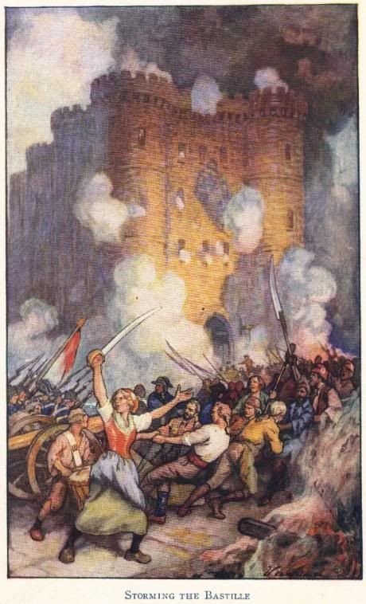
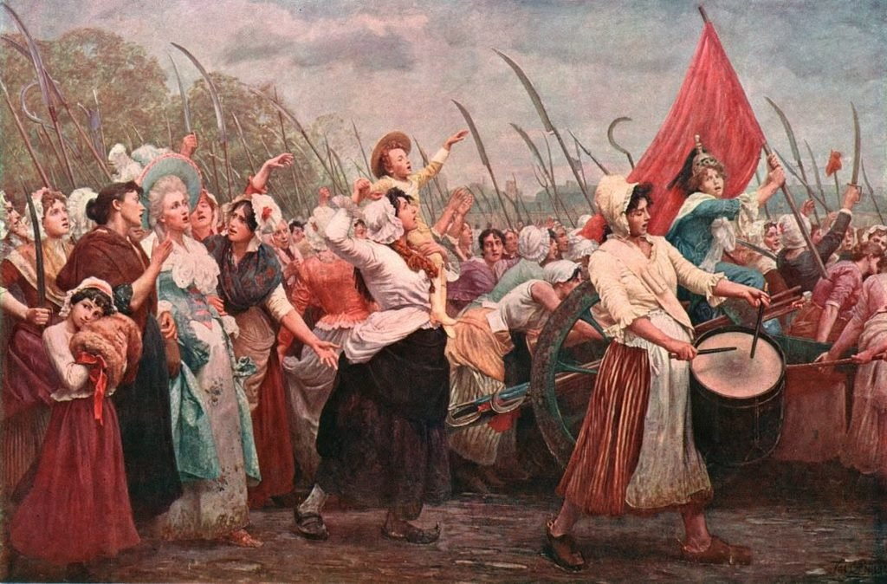
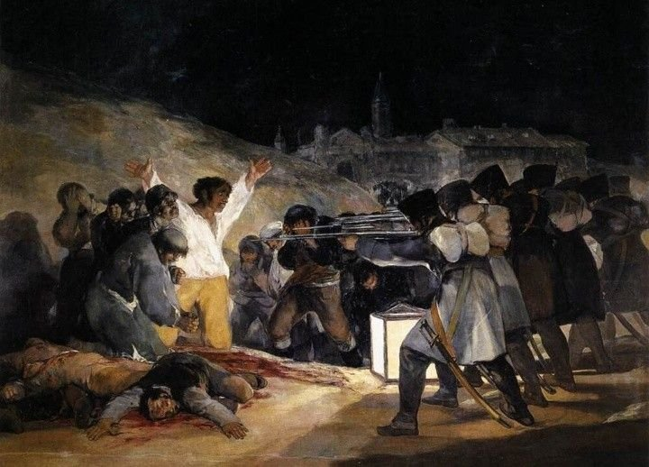
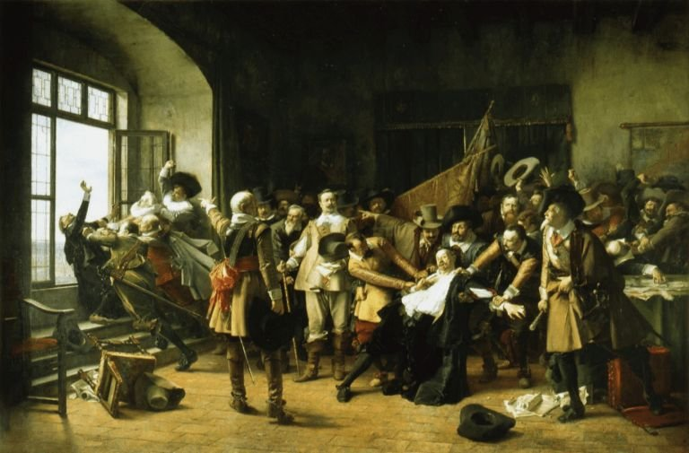
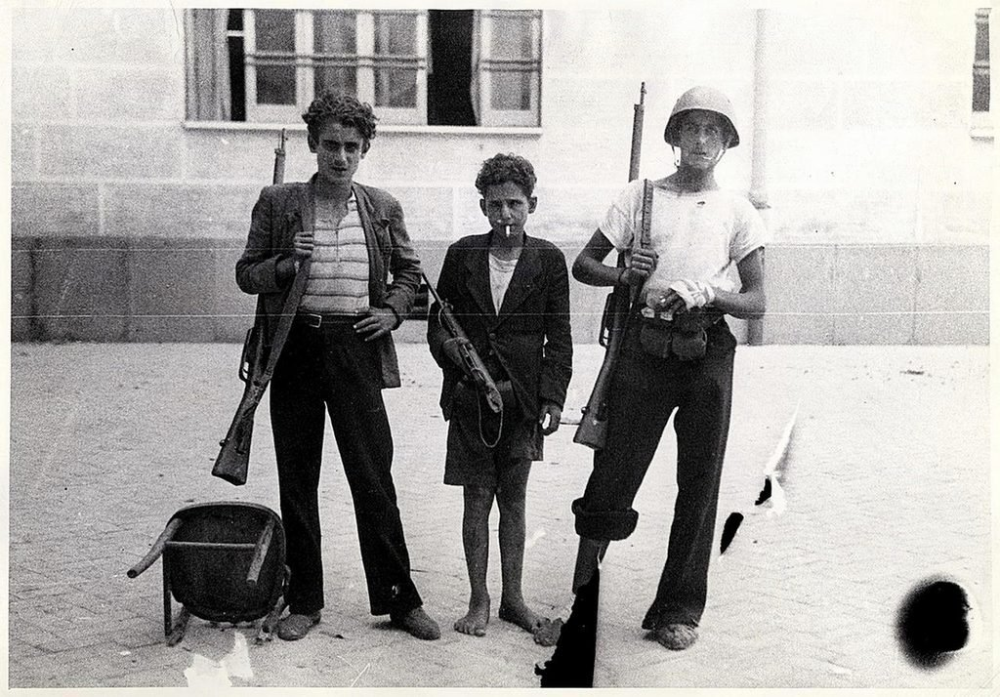
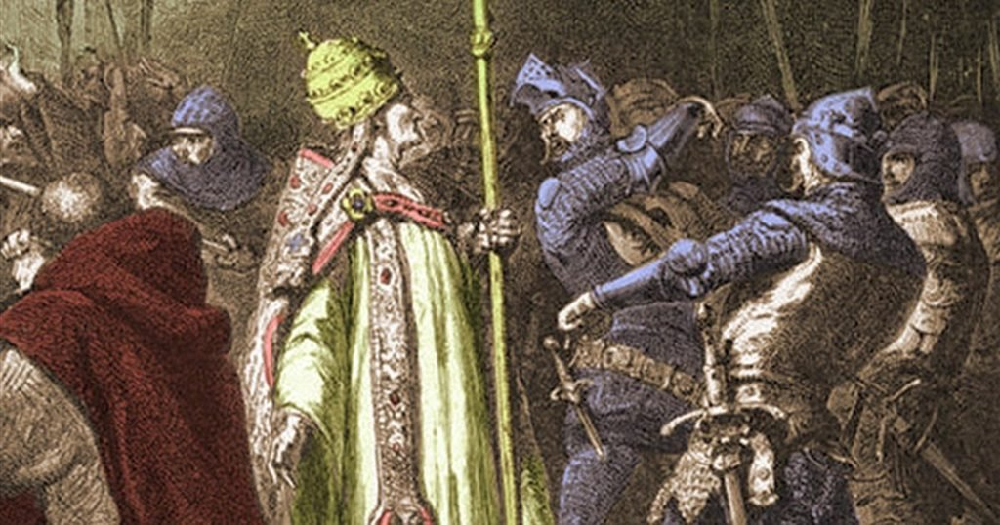
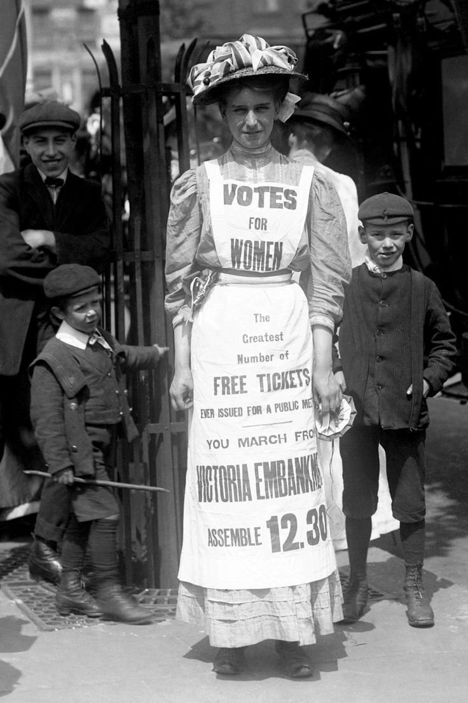
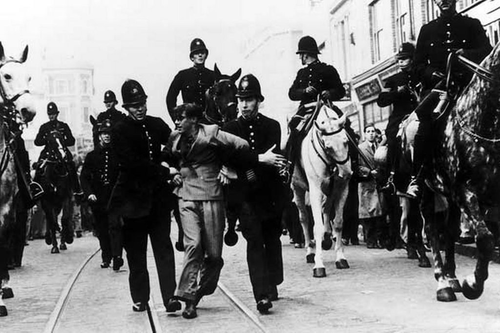

esto me pasa por manifestar
ayer vi una manada de búfalos viniendo hacia nosotras, la tierra temblando, el polvo, los cuernos, y según se acercaban se les iban cayendo los cuernos y el pelo y la fuerza, y al final no eran búfalos, eran cuatro gilipollas con complejo de dios y el pecho hinchado como palomos, la cara tapada y un par de palos que venían a tocarnos los huevitos mientras nosotras nos manifestábamos en paz.
y yo, que llevo meses viviendo por inercia, levantándome porque toca y acostándome porque toca, comiendo de pie delante de la nevera abierta porque sentarme me parece demasiado esfuerzo, me acordé por fin de lo que significa sentirse viva. una descarga de adrenalina que me subió desde los pies hasta los dientes, un chute de vida que no me daba nada desde hacía muchísimo. El corazón en la garganta, las manos sudando, las bragas pegadas, la boca seca como si me hubiera fumado tres porros seguidos y hubiera comido Doritos sin tragar ni una gota de agua.
pensé en coger el palo de escoba que solo dos días antes había usado para hacer columnas y columnas que aguantaran kilómetros y kilómetros de lona impermeable, partirlo en dos con un golpe seco contra el cuádriceps derecho, que me iba a salir un moratón del tamaño de un plato de postre, y usar las dos mitades como armas blancas, con las astillas apuntando hacia fuera, como dos katanas, y abrirle la cabeza a alguien…………pero solo si me toca. solo para defenderme. saltarle todos los dientes y dejarle con las encías abiertas y sangrando, escupiendo trocitos de sí mismo en el asfalto.
y escucharle pedir «perfón, perfón» sin saber dónde poner la lengua para hacer sonidos.
ya sé que lo que estoy diciendo es políticamente y éticamente lo peor. ya lo sé. y yo no he sido nunca violenta, al revés, en el instituto las bofetadas siempre me las llevaba yo, una vez cinco o seis seguidas, y yo ahí quieta, con la cara caliente, los ojos tan llenos de lágrimas que ni veía de dónde me venían las tortas, esperando que se cansaran. y luego en el baño, mojándome la cara con agua del grifo que olía a cloro, mirando cómo se me ponía roja la mejilla con la forma de unos dedos que no eran míos. pero ayer me puse a pensar en la suerte que tengo de vivir esto y en la mala suerte que tienen los que no quieren formar parte, que son tan vagos por dentro, o tan tontos, que no les interesa nada así de intenso y de especial y de pasional. y si fuera por mí construiría una máquina del tiempo solo para ir a pegarme con cuantos más bobos mejor.
sobre todo porque sí, ahora estamos protestando pacíficamente y me toca estar quieta, y quiero estar quieta, y quiero creer que la violencia nunca nunca pero nunca va a ser un arma que funcione. por muy grave que llegue a ser una situación, yo lo quiero creer, que la violencia no sirve de nada. que solo te mancha el corazoncito, que te pudre por dentro y te deja una amargura y unos pensamientos feos que no te dejan dormir ni vivir ni descansar un poco, porque es adictiva y peligrosa y maldita.
ojalá haber visto con mis ojos todo lo que ha pisado este planeta, ojalá mis oídos lo hubieran oído todo, ojalá mi nariz se hubiera llenado de todos esos olores que ni puedo imaginarme, el humo, la sangre, la mierda de caballo en las calles, el sudor de miles de personas apretadas unas contra otras. cuántas emociones no voy a sentir nunca, cuántas cosas de mí solo habría podido conocer estando allí.
es increíble que me dé fomo no poder oler la mierda de caballo… o los alientos asquerosos de la gente gritando a mi lado. pero a mí también me habrían olido el aliento. y habría visto más mierda de caballo yo sola que toda la población de madrid de ahora junta. asì que da igual.

la toma de la bastilla
parís, 14 de julio de 1789. la bastilla era una fortaleza-cárcel enorme en medio de la ciudad, ocho torres de piedra que llevaban siglos diciéndole a la gente aquí mando yo. el pueblo llevaba meses sin pan y con el rey gastándose lo que no había, y esa mañana ya habían sacado fusiles de los inválidos, pero les faltaba la pólvora, y la pólvora estaba dentro de la bastilla. así que fueron a por ella. el gobernador, un tal de launay, primero dijo que no, luego disparó, luego se rindió, y acabó con la cabeza clavada en una pica paseándose por las calles. dentro solo había siete presos: cuatro falsificadores, dos locos y un conde al que había mandado encerrar su propia familia por vicioso.
me encantaría haber estado ahí.
estar en medio de esa masa que empuja y empuja y no sabe muy bien qué va a encontrar dentro pero empuja igual, oliendo a sudor y a pólvora y a pan que no hay. yo con mi palo de escoba roto por la mitad, gritando, corriendo, escondiéndome a lo mejor detrás de un carro, haciéndome pis encima puede ser. uff, me gusta pensar que les habría dado buenas hostias a todos los objetos más frágiles que me encontrara por el camino, ventanas, jarrones y porcelanas.

la marcha sobre versalles
5 de octubre de 1789, tres meses después de la bastilla, y el pan sigue costando un riñón. por la mañana unas cuantas mujeres de los mercados de parís, pescaderas, lavanderas, verduleras, se juntan delante del ayuntamiento a gritar, se va sumando gente, y al rato son miles, seis o siete mil, casi todas mujeres. y deciden ir a pedirle pan al rey en persona. a versalles. que está a unos veinte kilómetros. andando. bajo la lluvia. con cuchillos de cocina, con picas, arrastrando hasta cañones. llegan por la tarde empapadas, se meten en la asamblea y se sientan en los escaños de los diputados con las faldas chorreando. a la mañana siguiente entran en el palacio y la reina maría antonieta tiene que escaparse por un pasillo secreto. al final el rey cede y se vuelve a parís con ellas, en una procesión gigante, con carros de harina y las cabezas de dos guardias en picas.

el dos de mayo en madrid
1808. napoleón había metido sus tropas en españa con la excusa de ir a invadir portugal, y ya puestos se fue quedando. a los reyes se los había llevado a bayona, en francia, y el 2 de mayo por la mañana los franceses fueron a sacar del palacio real a los últimos de la familia que quedaban, entre ellos un infante de trece años. y la gente que estaba en la puerta dijo que no. empezó con gritos, siguió con piedras, y en un par de horas medio madrid estaba en la calle peleando contra el ejército más poderoso del mundo con navajas, macetas tiradas desde los balcones, tejas, aceite. en el parque de artillería de monteleón, dos capitanes, daoíz y velarde, desobedecieron las órdenes y se pusieron con los cañones del lado de la gente. murieron los dos. y al día siguiente los franceses fusilaron a cientos de personas, que es lo que pintó goya en los fusilamientos, ese hombre con la camisa blanca y los brazos abiertos.
y manuela malasaña, que dicen que tenía quince años y era costurera, y que la mataron porque le encontraron encima las tijeras de coser. unas tijeras. lo que usaba para hacer dobladillos. que no sé si es verdad o leyenda pero me da igual, porque es mi palo de escoba doscientos años antes y en la misma ciudad donde vivo. y ahora el barrio lleva su nombre y está lleno de gente tomándose cañas en las terrazas, y yo me pregunto cuántos saben que se llama así por una niña con unas tijeras.

agustina de aragón
el mismo verano de 1808, y los franceses ahora quieren zaragoza. la ciudad casi sin murallas, defendida por civiles y cuatro soldados. el 2 de julio atacan la puerta del portillo, y en la batería los artilleros han caído todos, muertos o heridos. y ahí aparece agustina, que había nacido en barcelona, que tenía veintidós años y que dicen que había ido a llevarles comida. a llevarles comida, eh. y en vez de dejar la cesta y largarse coge la mecha de la mano de un artillero muerto y dispara el cañón a quemarropa contra los franceses, que ya los tenía casi encima. los franceses se echan para atrás. a ella le dieron grado militar, goya la grabó de pie encima de un montón de cadáveres disparando, y hasta lord byron le escribió versos.
yo quiero saber qué se siente en las manos, en el pecho, en la tripa, cuando el cañón te revienta los oídos y sigues de pie. y luego que te pinten en los cuadros con un vestido limpio, peinada, como si no hubieras estado negra de pólvora hasta las orejas.

la defenestración de praga
mi favorita, yo tirando a gente por las ventanas, ¿hay algo mejor? praga, 23 de mayo de 1618. bohemia era protestante y el emperador, católico, les estaba recortando la libertad religiosa a cachitos. así que un grupo de nobles protestantes sube al castillo de praga, se encierra en una sala con dos gobernadores católicos del emperador, discuten un rato, y al final los agarran y los tiran por la ventana. a los dos. y de propina al secretario. unos veinte metros de caída. y sobreviven los tres. los católicos dijeron que había sido un milagro, los protestantes dijeron que habían caído encima de un montón de mierda. al secretario, encima, el emperador lo hizo noble y le dio un apellido nuevo, von hohenfall, que viene a ser «el de la caída alta». con eso empezó la guerra de los treinta años, que fue una carnicería, pero el principio, el principio es comedia pura.
solo por ver la cara de esos señores mientras volaban hacia abajo, con las capas abiertas como murciélagos torpes, y luego verlos aterrizar en la mierda y salir vivos, apestando, con la dignidad hecha un trapo. y que encima los suyos dijeran que los habían salvado los ángeles. ángeles de estiércol.

las cuatro jornadas de nápoles
septiembre de 1943. italia acaba de firmar el armisticio con los aliados, y los alemanes, que eran sus socios hasta anteayer, se lo toman fatal y ocupan la ciudad. empiezan a fusilar gente, a quemar cosas, y ordenan que todos los hombres jóvenes se presenten para mandarlos a trabajar a alemania. no se presenta casi nadie. y el 27 de septiembre la ciudad explota. cuatro días peleando calle por calle, con armas robadas, con piedras, con muebles, con literalmente niños de doce años, señoras en bata, viejos que no podían ni correr, y con los scugnizzi, los niños de la calle, que eran los más bravos de todos. uno de ellos, gennarino capuozzo, de once o doce años, murió tirándole granadas a un tanque, y le dieron la medalla de oro. el 1 de octubre, cuando llegaron los aliados, los alemanes ya se habían ido. dicen que nápoles fue la primera gran ciudad de europa que se levantó sola contra los nazis.

la bofetada de anagni
1303. el papa bonifacio VIII y el rey de francia, felipe el hermoso, llevaban años peleándose por quién mandaba más, básicamente por dinero, porque el rey quería cobrarle impuestos a la iglesia. el papa saca una bula diciendo que para salvarse todo ser humano tiene que estar sometido al papa, rey incluido. y el rey le contesta mandando a uno de los suyos, guillaume de nogaret, junto con sciarra colonna, de una familia romana que odiaba al papa a muerte, a anagni, el pueblo donde el papa pasaba el verano. entran en el palacio y lo pillan, un señor de más de setenta años, sentado en el trono, vestido de papa de arriba abajo, esperándolos. y la leyenda dice que sciarra le dio una bofetada con el guante de hierro puesto. lo tuvieron preso tres días hasta que la gente del pueblo lo liberó, y se murió al mes, en roma, dicen que de la rabia y de la vergüenza. hasta dante, que lo odiaba y lo metió en el infierno, se escandalizó por lo de anagni.
PERO!!!!!!!!!!!! yo solo voy si la bofetada la doy yo. que dicen que a lo mejor ni la hubo, que fue más una humillación que una hostia de verdad. pues por eso, que alguien tenía que dársela, y si no se la dio nadie se la doy yo, con la mano abierta, que suene, que le quede la marca de mis cinco dedos en la cara de tonto que seguramente tenía.

las sufragistas
inglaterra, principios del siglo XX, y las mujeres sin poder votar. llevaban décadas pidiéndolo por favor, con cartas y peticiones y buenos modales, y nada. así que emmeline pankhurst y las suyas dijeron vale, se acabaron los modales: hechos, no palabras. y empezaron a interrumpir mítines, a encadenarse a las verjas, a quemar buzones, y en 1912 a romper escaparates en las calles más pijas de londres, todas a la vez, a la misma hora, sacando el martillo del bolso, señoras con sombrero y falda larga reventando cristales. las metían en la cárcel y hacían huelga de hambre, y el gobierno, para que no se le murieran y se convirtieran en mártires, las alimentaba a la fuerza con un tubo por la nariz. luego se inventaron una ley para soltarlas cuando estaban medio muertas y volver a encerrarlas en cuanto se recuperaban, y la gente la llamó la ley del gato y el ratón. en 1918 votaron por fin, solo las de más de treinta años y con propiedades. las demás, diez años después.

la batalla de cable street
londres otra vez, 4 de octubre de 1936, y justo hoy, el día que escribo esto, se cumplen noventa años. oswald mosley, el jefe de los fascistas británicos, con sus camisas negras, quiere desfilar por el east end, el barrio de los judíos pobres, de los irlandeses, de los obreros, solo para provocar. y el barrio dice que no. salen a la calle decenas de miles de personas, más de cien mil según quién lo cuente, a cortarles el paso, y lo que gritan es they shall not pass, no pasarán, copiado de los republicanos españoles, que llevaban tres meses en guerra. la policía intenta abrirles camino a los fascistas a porrazos, y en cable street la gente levanta barricadas con un camión volcado, colchones, muebles, y desde las ventanas las vecinas les tiran encima basura, verduras podridas y lo que había en los orinales. al final la policía le dice a mosley que se dé la vuelta. y se la da.
pis y caca de una noche entera cayéndoles en la gorra. no se me ocurre una forma más bonita de decir que no.
hoy me he despertado con la garganta en carne viva de tanto gritar, con agujetas en sitios que no sabía ni que tenía y un moratón en la rodilla que no sé de dónde ha salido. y mientras me tomaba el café pensaba en toda esa gente de la lista. en las pescaderas de versalles, en manuela y sus tijeras, en el chaval de nápoles, en las vecinas de cable street con el orinal en la mano. ninguna sabía que estaba en la historia. se levantaron esa mañana con hambre, con frío, con la regla a lo mejor, cabreadas por algo concreto, por el pan, por el hijo, por el barrio, y salieron. y seguro que alguna se meó encima del miedo y nadie lo apuntó en ningún libro. a lo mejor la historia es solo eso, gente cagada de miedo que sale a la calle de todas formas. como yo y mis amigas ayer, y hoy, y mañana, y después de mañana, y en tres días, en cuatro cinco seis siete.
un besooo xxx como siempre gracias x leerme